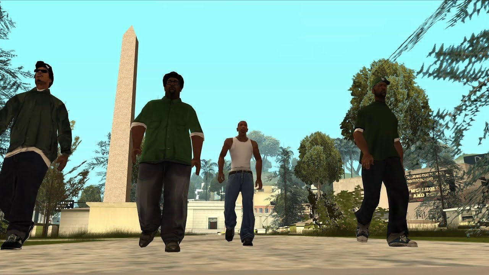

Acerca de Carl Jhonson:
Carl Jhonson más popularmente conocido como CJ es un pandillero que pertenece a los Grove Street Families.
CJ y sus amigos.
Características:
- Su físico predeterminado es flaco, pero el jugador puede cambiarlo.
- Tiene una camiseta blanca sin mangas.
- Tiene un jean vaquero azul.
Amigos de CJ:
Cabe resaltar que algunos de los que CJ consideraba hermanos lo traicionaron en el transcurso del modo historia. Click en los enlaces para ver más acerca de sus amigos.